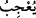

İnsanlar içinde öyle kimseler vardır ki, dünyâ hayatı hakkındaki sözleri seni hayran
bırakır. Sözlerinin dış görünüşünü güzel ve makbûl bulursun. Âyet-i kerîmede geçen (
) “yu’cibu” fiilinin masdarı olan “îcâb” kelimesi, bir şeyi güzel bulup ona
meyletmek ve ta’zîm göstermek anlamındadır. Râgıb el-Isfahânî der ki: Taaccüb,
sebebi bilinmeden, insanda meydana gelen hayrettir.
O kimsenin dünyevî konuşmaları seni hayrân bırakır. Zîrâ onun hedefi senin
muhabbetini elde etmektir. Bundan da kasdı, belli bir dünyâlık elde etmektir. Zaten bu
sebepledir ki, âhıret hakkında değil de, dünyâ hakkında söz söyler.
Şu mânâda da anlaşılabilir: Onun dünyevî konuşması, sözündeki tatlılık ve
fesâhatinden dolayı senin hoşuna gider. Yoksa uhrevî konularda konuşması, yalanı ve
çirkefliği ortaya çıkacağı için hoşuna gitmez. Böyleleri bir de kalkar: Allah’ı
kalbindekine şâhid gösterir. “Allah şâhid, gönlümde îmân ve size karşı muhabbet vardır.
Dilim ne ise kalbim de odur” der. Halbuki düşmanlığı en şiddetli olan odur.
Müslümanların can düşmanıdır o.
Bu âyet-i kerîme, Ahnes b. Şerîk es-Sekafî hakkında nâzil olmuştur. Bu kişi, Rasûl-i
Ekrem (s.a.) Efendimiz’e dostluk gösterisinde bulunur, müslüman olduğunu ve dîni
sevdiğini iddiâ ederdi. Görünüşü güzel, sözü tatlı birisiydi. Hem sevgi iddiâsında
bulunur, hem de mürted ve din düşmanlarına karşı müslümanca tavır takınmaz, Allah
Rasûlüne muvâfakat etmezdi. Halbuki seven, sevdiği neyi severse o da onu sever.
Nitekim şâir der ki:
Allah’ı sevdiğini iddia ediyorsun.
Halbuki O’na isyanda berdevamsın.
Andolsun ki bu görülmedik bir iş.
Sevginde samimi olsaydın eğer,
İsyan değil, itâat ederdin.
Zira seven sevdiğine boyun eğer.
Hâfız Şirâzî de der ki:
Sadâkatle kulak ver ki, güneş kendiliğinden doğar.
İlk fecir, yalancı olduğu için hemen yüzü kararır.
205. O, dönüp gitti mi (yahut bir iş başına geçti mi) yeryüzünde ortalığı fesâda
vermek, ekinleri tahrip edip nesilleri bozmak için çalışır. Allah bozgunculuğu
sevmez.
O kimse senin meclisinden ayrılıp bir iş başına geçince yeryüzünde bozgunculuk